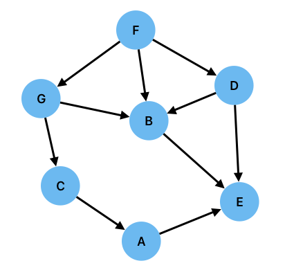
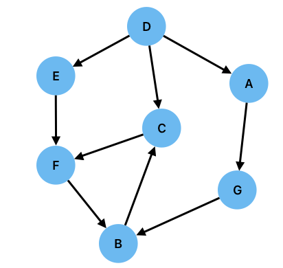

Welcome to ECS8052 Knowledge Engineering#
Please use these pages in conjunction with the resource on the course’s canvas page.
Introduction to Logic in Artificial Intelligence#
Logic is central to computer science. Many of you will be familiar with its role in the design and construction of computers. Logic gates and the principles of digital logic are the building blocks of modern computer technology. The principles of logic though, have much deeper roots in computer science. At a very fundamental level, the Curry-Howard Correspondence establishes that there is a deep and poorly understood link between logic and computation, and more specifically that computation is equivalent to logic, with logical propositions corresponding to types, and logical proofs to computer programs. Logic is also fundamental to the Formal Methods that a rewidely used to specify and verify computer programmes. It has also had, and will continue to hold, a central role in the development of Artificial Intelligence. This will be the subject of this part of the course.
In the current era in which pure data-driven approaches using machine learning and deep learning dominate the state of the art in artificial intelligence, it may seem arcane and pointless to study logic. This point of view would be mistaken. Perhaps the fundamental tenet of AI is the notion that can construct an inanimate physical device that can execute a set of operations that can mimic human thought. Consider the following two statements:
Aristotle is a man
All men are mortal
Most humans are easily able to infer that if these two statements are true, then Aristotle must be mortal. This type of thinking - reasoning - is widely believed to be a central component of any intelligent agent. Such reasoning abilities are demonstrated in a wide range of intelligent biological agents. For example, see this video of crows using stones to raise the level of water in a jar so they can get to some food that is floating in the water. Reasoning abilities that allow rigourous arguments to be constructed that enable decisions to be made and actions to be taken to acheive goals are generally regarded as an essential component of any intelligent system, though there are many disagreements about how to endow an artificial intelligent system with such abilities.
If we accept that reasoning is an essential part of intelligence, then an artificial intelligence requires that the processes of reasoning that emerge naturally in biological systems need to be mechanised for and engineered implementation in a different medium. The mechanisation, or automation of reasoning has been studied for millenia, with philophers from al of the ancient cultures developing formal approaches to constructing arguments. Perhaps most famous in Western cultures is the work done by the Greek mathematician Euclid in his famous work Elements, but equally important work was being done in other cultures, for example, by al-Khwārizmī, from the ancient region of Khwarazm in what was once part of Iran and is part of Uzbekistan/Turkmenistan region, whose work included the development of modern algebra and the concept of the algorithm, a notion named after him. Their work is a direct precursor of first the work of Leibniz, Hobbes, and Descartes in the 17th Century, who investigated, from different perspectives, the idea that rational thought could be reduced to calculation.
The study and automation of correct reasoning was also being extensively studies in philosophy, with formal logic crossing the boundary to mathematics where Alfred North Whitehead and Bertrand Russell successfully laid logical foundations to the whole of mathematics in their seminal work Principia Mathematica. A very accessible and informative introduction to Russell’s work can be hear on BBC Radio 4’s In Our Time. Formal logic would later play a critical role in the development of the first computer-based intelligent systems.
The notion that computers could be intelligent was really catalysed by the man who is widely regarded as the Godfather of AI, Alan Turing. Turing first put forward the notion that in additional to having reasoning abilities, humans also used available information - knowledge - to solve problems [Tur50]. This idea heavily influenced other early pioneers of AI such as John McCarthy, Marvin Minsky, Herb Simon, and others who realised that reasoning could be performed by symbol manipulation, where the symbols represented pieces of knowledge and the manipulations represented the steps in a reasoned argument. This focus on symbolic AI lasted several decades and resulted in systems such as Newell, Shaw, and Simon’s Logic Theorist [NS56]which was able to prove thirty-eight of the first fifty-two theorems in Whitehead and Russell’s Principia Mathematica.
These early successes were compelling and drove widespread optimism about AI-by-symbol-manipulation, but it was not too long before problems became evident. Foremost among these was the practical difficulty of maintaining a large and rapidly growing knowledge base in which known facts are represented in a structured way. This has led, in recent years, to a refocussing ofm AI research onto machine learning methods, and most recently deep neural networks. These methods have been successful across a wide range of problems and this includes demonstration of some limited reasoning capabilities. In particular, large language models (LLM), which learn from enormous unstructured knowledge bases, have been shown to be able to perform some basic reasoning. However, even cursory evaluations of the output of the most sophisticated LLM reveal that they often make basic errors in reasoning. This is because they have not been endowed, by design, with a mechanism for performing such reasoning rigourously and instead rely on correct reasoning emerging from statistical correlations in their dataset. Importantly, they do not have a robust internal representation of known facts about the world, although it is highly likely that they are likely to have developed some kind of representation.
In this part of the course we will focus on developing methods for formally representing knowledge and reasoning (making decisions) rigourously over that knowledge. Our main approach will be to use the principles of formal logic, which we will find to be a very powerful tool for both manual and automated reasoning. The methods we will use were the mainstay of symbolic AI, and it is widely believed that the current challenges in getting LLMs to reason rigourously could be addressed by embedding logical capabilities into the LLM model.
Let’s begin with an exercise - how good is your logical reasoning?
Allen Newell and Herbert A. Simon. The logic theory machine: a complex information processing system. Technical Report P-868, The RAND Corporation, June 1956. URL: theoremprover-museum/logic-theorist.
Alan Mathison Turing. Computing machinery and intelligence. Mind, 236:433–460, 1950. URL: https://academic.oup.com/mind/article/LIX/236/433/986238?login=false, doi:10.1093/mind/LIX.236.433.
Exercise 1: Are you Logical?#
Is the following argument correct? If not, find the logical flaw.
Siobhan only has fish for dinner on Fridays.
It is not Friday.
Therefore, Siobhan will not be having fish for dinner.
Solution
This is a valid argument.
Is the following argument correct? If not, find the logical flaw.
If you have an MSc in AI then you will get a good job.
Declan has a good job.
Therefore, Declan has an MSc in AI.
Solution
This argument is false because the first statement does not state that all good jobs required an MSc in AI.
Is the following argument correct? If not, find the logical flaw.
If there is smoke there is a fire.
There is no snoke.
Therefore there is no fire.
Solution
This is a false argument because statement (a) does not preclude the possibility of a fire without smoke, which is not explicitly ruled out by the premises.
Is the following argument correct? If not, find the logical flaw.
If it is cold, John wears a coat.
John is not wearing a coat.
Therefore, it is not cold.
Solution
This is a valid argument.
Which of the following statements are equivalent?
Kerry carries an umbrella when it is raining.
Kerry does not carry an umbrella when it is not raining.
Kerry carries an umbrella unless it is not raining.
Solution
The first statement tells us what Kerry does when it is raining (carry an umbrella), but does not tell what she does when it is not raining.
The second statement tells us that Kerry does not an umbrella when it is not raining, but does not say anything about what she does when it is raining. It is therefore not equivalent to statement (a).
The third statement tells us that when it is raining, Kerry carries an umbrella, and that when it is not raining, she does not carry am umbrella.
Therefore, none of the statements are equivalent.
This is a harder question that requires multiple stages of reasoning
Ahmed, Chen, and Niamh are three friends. They went for dinner together one evening. They decided that they wanted to try all of the items on the menu so they all chose a different main course and a different dessert. The menu options for the main course were Pizza, Daal, and Falafel. For dessert, the choices were Apple Pie, Cheesecake, and Ice Cream. Given the five statements below, can you work out who ordered what?
The person who had the Pizza did not have the Apple Pie.
Niamh had the Daal.
Ahmed did not have Cheesecake.
Chen had the Apple Pie.
The person who had the Ice Cream did not have the Falafel.
Solution
We can made the following deductions:
a) Ahmed had Ice Cream: he did not have cheesecake (by 3) or Apple Pie (by 4)
b) Ahmed had Pizza: he did not have Daal (by 2) or Falafel (by 5 and a)
c) Niamh had the Cheesecake: she did not have Apple Pie (by 5) or Ice Cream (by a)
d) Chen had the Falafel: she did not have Ice Cream (by a) or Cheesecake (by c)
Combined with the choices stated explicitly in statements 2 and 4 we deduce that:
Ahmed had Pizza and Ice Cream
Chen had Falafel and Apple Pie
Niamh had Daal and Cheesecake
Logic and Knowledge#
A major component of intelligence is the ability to reason: to take our knowledge of the world and use it to work out what might happen if we take a particular decision. Logic is the study of reasoning. More specifically it is about correct reasoning: constructing arguments and making inferences in ways that follow directly from a set of premises. Given the two statements
All humans are mortal
Socrates is a human
it must follow that
Socrates is mortal
This is an example of a deductive truth: a true statement that can be deduced from the first two statements. It is not possible for the first two statements to be true, and for the third to be false. Note that the converse is not necessarily true: neither of the first two statements can be deduced from the third.
The two statements “All men are mortal” and “Socrates is a man” form a very simple example of a knowledge base. They are not data: although the second statement could conceivably be deduced from some sort of data, the first certainly could not be as no matter how much data we have about mortality rates, this would never allow us to definitively rule out a counterexample. Nevertheless, we know definitively that this must be true because of our understanding of human biology.The statement that “all men are mortal” is a known fact and is thus described as knowledge rather than as data. Here are three more statements about the world that would be considered as knowledge rather than data:
It is normally colder in the winter than in the summer.
Mount Everest is the tallest mountain in the world.
Water makes you wet.
All of these statements are True, but not all can be easily be deduced from data. The first two statements are known to be True because we have measurements of seasonal temperatures and heights of mountains. However, the third statement, whilst undoubtedly True, would be very difficult to deduce from data.
As well as being True, these statements are also grounded in the world. We understand the concept of a mountain and that it is related to measurements of height; we know what the seasons are and that temperature is influenced by them; and we know what water is and what it means to be wet. The proper grounding of statements into “knowable” concepts is important when determining the correctness of an argument (a chain of reasoning). We will be exploring this in more detail in the section on soundness and validity
Truths can sometimes - but not always, and not always easily - be extracted from a set of data. For example, that Everest is the tallest mountain in the world should be easily identifiable from an appropriate dataset. The fact that water makes you wet is unlikely to be quite so easily discernable from data alone. For this reason, we refer to these facts about the world as knowledge. In the forthcoming section on [knowledge bases][section:knowledge-bases] we will see how we can formally represent knowledge. Before we reach that stage though, we will find it helpful to develop a formal framework that will establish a rigourous basis for correctly reasoning about a world represented by a set of knowledge statements and to draw conclusions and make inferences based on those statements. That framework is logic and we will now introduce some of the fundamental concepts. We will begin with a type of logic called propositional logic, which will allow us to reason over statements of fact.
Propositions#
Statements of fact such as “water makes you wet” are called propositions and they are fundamental to the construction of arguments in logic. A proposition is a statement can either be either True or False. Thus, “it is raining” is a proposition whereas “is it raining?” is not.
There are two type of proposition:
Premises, which are stated and may be considered as axioms (things that are known)
Conclusions, which are derived purely from the Premises.
For example,
Socrates is a man [Premise]
All men are mortal [Premise]
Therefore, Socrates is mortal [Conclusion]
Propositions may also be composed of multiple atomic propositions joined by connectives. Each atomic proposition must be a valid proposition that can be evaluated as True or False in isolation, for example (connectives in *bold):
The car is blue and fuelled by petrol (The car is blue and the car is fuelled by petrol)
Books have hard or soft covers (Books have hard covers or books have soft covers)
If the sun is shining then it is daytime (If the sun is shining then it is daytime)
Argument Correctness#
When we construct a logical argument, we will, quite naturally, be concerned about whether that argument is correct
The sun only shines during the daytime; It is daytime; Therefore, the sun is shining.
It only rains during the nighttime; It is raining; There, it is nighttime.
The sun only shines during the daytime; The sun is shining; Therefore, it is daytime.
One of these arguments is correct; the other two are incorrect but for different reasons.
The first argument is incorrect because the conclusion does not follow if the two premises are True. This argument is not valid.
The second argument is also incorrect, but for a different reason. If the two premises were True then the argument would be Valid. However,
first premise is clearly not True and so this cannot be a correct argument. An argument in which one or more of the premises is not True is not sound.
If one of the premises turned out to be false, the argument would still be valid, but it would no longer be sound.
The third argument is both sound and valid: the two premises are True (sound), and if the premises are True then the conclusion is also True (valid). This is therefore a correct argument. When we refer to arguments as being correct, we mean that they are both sound and valid.
Exercise 2: Elementary, my dear Watson#
Which of the following statements are propositions?
a) The sun does not shine at night.
b) All dogs are brown.
c) Go over there.
d) The book was on the table.
e) It takes 3 minutes to soft-boil an egg.
f) Dogs chase cats.
g) If it is daytime and there are no clouds then the sky is blue.
h) It was raining and I got wet.
i) The pan is hot so don’t put it on the worktop.
j) Who needs enemies when you have friends like that?
Solution
Propositions are statements of fact. All of the statements state facts except for (c) and (i) which are instructions, and (j) which is a question.
Note that the truth of a sentence does not determine whether it is a proposition of not, so statement (b) is a proposition, but is one that is False.
Identify the atomic propositions in the following statements
a) If it is daytime and there are no clouds then the sky is blue.
b) Headaches can be treated with Aspirin or Paracetamol.
c) Birds and Bats can both fly.
Solution
a) (“it is daytime”, “there are no clouds”, “the sky is blue”).
b) (“Headaches can be treated with Aspirin”, “Headaches can be treated with paracetamol”).
c) (“Birds can fly”, “Bats can fly”)
Are the following arguments valid, sound, neither, or both? a) i) Birmingham is not a city in the country of Northern Ireland.
ii) QUB is not in the city of Birmingham.
iii) Therefore QUB is in the country of Northern Ireland.b) i) QUB is in the city of Birmingham.
ii) QUB is in the country of Northern Ireland.
iii) Therefore the city of Birmingham is in the country of Northern Ireland.c) i) If it is nighttime the sun does not shine.
ii) The sun is not shining. [you may assume this to be true]
iii) Therefore it is nighttime.d) i) If it is nighttime the sun does not shine.
ii) The sun is shining. [you may assume this to be true]
iii) Therefore it is not nighttime.
Solution
a) This is sound but not valid. The conclusion cannot be drawn from the premises.
b) This is a valid argument because the conclusion follows from the premises, but is not sound because the first premise is false.
c) This is sound (all premises are true) but it is not valid because the premises do not specify what the sun does when it is not nighttime. For example, the sun does not shine when it is cloudy during the daytime.
d) This is both valid and sound. The first premise means that the sun cannot shine at night.
Making Logical Arguments Formal#
We are all familiar with contructing arguments using natural language. This is convenient for us, as humans, as it allows us to express ourselves in the way that is most natural. However, it is not a representation that is very amenable to computation. Even in the age of large language models, computers are still not able to reason rigourously using natural language. To be truly rigourous, we have to represent our arguments in a way that is more naturally amenable to mathematical manipulations.
Propositions as Symbols#
Consider the following sentence:
If I am going outside and it is not raining then I do not take a coat or an umbrella.
Note that this sentence alone is not an argument: it is a statement - a proposition, which can be be True or False. We can also see that it is a compound proposition, made up of four atomic propositions:
It is raining
I am going outside
I take a coat
I take an umbrella
Clearly these are also propositions and they are irreducible. We can ther to be able to represent them using symbols. Let us choose to represent them as \(R\), \(O\), \(C\), and \(U\) respectively. Using this notation we may then expect to be able to write the compound sentence is a form something like:
if (O and not(R)) then not(C or U)
This is rather cumbersome and doing the logical equivalent of algebra with our symbols will be much easier is we introduce some more notation for the connectives that join our propositions together.
Connectives#
In our example we have used four logical connectives to construct a compound statement from atomic propositions. We will also introduce a fifth connective that is widely used in logic:
| Operation | Name | Symbol | Behaviour |
| NOT | Negation | \(\lnot\) | \(\lnot P\) is true when \(P\) is False, and False when \(P\) is True. |
| AND | Conjunction | \(\land\) |\(P\land Q\) is True only when both conjuncts \(P\) and \(Q\) are both True, and is False if either \(P\), or \(Q\), or both \(P\) and \(Q\) are False. |
| OR | Disjunction | \(\lor\) |\(P\lor Q\) is true when \(P\) is True, or \(Q\) is True, or when both disjuncts \(P\) and \(Q\) are True. If is only False when both disjuncts are False. |
| IMPLIES | Material implication (if-then) |\(P\implies Q\) is True except when \(P\) is False and \(Q\) is True. |
| IFF | Biconditional | \(\iff\) | \(P\iff Q\). \(Q\) is True if-and-only-if \(P\) is True.|
Negation (NOT)#
The truth table for negation is:
\(A\) |
\(\lnot A\) |
|---|---|
T |
F |
F |
T |
Given the atomic proposition \(R\) (“It is raining”), the statement (“It is not raining”) can be expressed as \(\lnot R\).
Conjunction (AND)#
\(A\) |
\(B\) |
\(A\land B\) |
|---|---|---|
T |
T |
T |
T |
F |
F |
F |
T |
F |
F |
F |
F |
The statement “it is not raining and I am going outdoors” can be represented using AND and NOT operators as \(\lnot R \land O\). Notice that the NOT operation applies only to \(R\).
Disjunction (OR)#
\(A\) |
\(B\) |
\(A\lor B\) |
|---|---|---|
T |
T |
T |
T |
F |
T |
F |
T |
T |
F |
F |
F |
The statement “I will not take a coat or an umbrella” therefore becomes \(\lnot(C\lor U)\). Notice that in common language, we often use the word “or” to mean “exclusive-or” (XOR), which is True when one of the disjuncts is True, but not when both are True. We will always interpret OR to mean “either or both” which is consistent with the usual interpretation of “I will not take a coat or an umbrella”: I will not take a coat, I will not take and umbrella, and I won’t take both of them.
Material Implication (if-then)#
\(A\) |
\(B\) |
\(A\implies B\) |
|---|---|---|
T |
T |
T |
T |
F |
F |
F |
T |
T |
F |
F |
T |
Note that this is not the same as the if-then construct in Python or other programming languages, because it does not assign a value to anything. In propositional logic we should think about it not as a mechanism for assignment, but as a binary logic operator that should be treated in the same way as conjuction and disjunction. The statement \(R\land O \implies U\) is True except when \(R\land O\) is False and \(U\) is True and nothing is assigned to anything.
The Truth table for Implication is a little counter intuitive. Essentially it reflects that if the premise is not True, then we can say nothing about the conclusion. Logic doesn’t provide is with tools that express the notion that something “might be True” so we take the possibility of something being true to be equivalent to that same thing being True. Of course, if the premise (condition) is False, then it doesn’t matter!
Lets’s think about this in terms of a concrete example. Let’s define:
\(A\): “It is raining”
\(B\): “I get wet”
So the implication \(A\implies B\) translates as “It is raining implies I get wet”, or more naturally “If it is raining then I get wet”. If the two propositions \(A\) and \(B\) are both True, then the implication is clearly True. If \(A\) is True and \(B\) is False (“If it is raining I don’t get wet”), then the implication is clearly False. If \(A\) is False and \(B\) is True, (“If it is not raining I get wet”), we define the implication to be True, but this is what known as a vacuous truth: if the premise (“It is raining”) is False then nothing is implied about the conclusion - False implies anything. A slightly clearer example of this is “If pigs could fly then hell would freeze over”. The premise can never be True and so whether the conclusion is True or False is irrelevant. If you find this confusing, you are in good company! Remember the Truth Table.
Biconditional (if-and-only-if: iff)#
\(A\) |
\(B\) |
\(A\iff B\) |
|---|---|---|
T |
T |
T |
T |
F |
F |
F |
T |
F |
F |
F |
T |
The biconditional is a little more intuitive than the Material conditional. It is True whenever \(A\) and \(B\) are the same. It is related to Material Implication: \(P\iff Q \equiv (P\implies Q) \land (Q\implies P)\) Notice that this is very closely related to XOR which is True when \(A\) and \(B\) are different - can you write down the relationship?
Let’s now revisit our sentence
If it is not raining and I am going outdoors then I will not take a coat or an umbrella.
We can rewrite this using the symbols for the atomic sentences and the logical connectives that we have just defined:
\((\lnot R \land O)\implies \lnot(C\lor U)\)
This allows us to construct a Truth Table for the sentence, so we can see if it “behaves” as we would expect:
\(R\) |
\(O\) |
\(C\) |
\(U\) |
\(\lnot R\land O\) |
\(\lnot(C\lor U)\) |
\((\lnot R \land O)\implies \lnot(C\lor U)\) |
||
|---|---|---|---|---|---|---|---|---|
T |
T |
T |
T |
F |
F |
T |
||
T |
T |
T |
F |
F |
F |
T |
||
T |
T |
F |
T |
F |
F |
T |
||
T |
T |
F |
F |
F |
T |
T |
||
T |
F |
T |
T |
F |
F |
T |
||
T |
F |
T |
F |
F |
F |
T |
||
T |
F |
F |
T |
F |
F |
T |
||
T |
F |
F |
F |
F |
T |
T |
||
F |
T |
T |
T |
T |
F |
F |
||
F |
T |
T |
F |
T |
F |
F |
||
F |
T |
F |
T |
T |
F |
F |
||
F |
T |
F |
F |
T |
T |
T |
||
F |
F |
T |
T |
F |
F |
T |
||
F |
F |
T |
F |
F |
F |
T |
||
F |
F |
F |
T |
F |
F |
T |
||
F |
F |
F |
F |
F |
T |
T |
We see that the implication is False when it is not raining, I am outside, and I have taken either a coat or an umbrella. This makes sense because these situation directly contradict the statement. In all other cases, the implication is True. It does not contradict the implication to not take a coat or umbrella when it is raining and I am outside, and it does not contradict the assertion to take a coat or umbrella when it is not raining and I am not outside.
Exercise 3: Formal Dinners#
Express each of the following sentences using propositional logic and the following atomic sentences.
F: Sean ordered Falafel for dinner
P: Sean ordered Pizza for dinner
C: Sean ordered Cheesecake for dessert
I: Sean ordered Ice cream for dessert
a) Sean ordered Pizza and Ice Cream
b) Sean ordered Falafel and Ice Cream or Cheesecake
c) Sean ordered Pizza but not Cheesecake
d) When Sean orders Pizza he also orders Cheesecake
e) Sean only orders ice cream when he has pizza
Solution
a) \(P\land I\)
b) \(F\land (I\lor C)\)
c) \(P\land\lnot C\)
d) \(P \implies C\)
e) \(I \iff \land P\)
Express each of the following sentences using propositional logic and the following atomic sentences.
\(S_P\): Sean ordered Pizza for dinner
\(W_P\): Wei ordered Pizza for dinner
\(S_F\): Sean ordered Falafel for dinner
\(W_F\): Wei ordered Falafel for dinner
\(S_I\): Sean ordered Ice Cream for Dessert
\(W_I\): Wei ordered Ice Cream for Dessert
\(S_C\): Sean ordered Cheesecake for Dessert
\(W_C\): Wei ordered Cheesecake for Dessert
a) Sean and Wei both ordered Pizza
b) Sean orders Cheesecake if Wei orders Ice Cream
c) Wei only has Falafel if Sean orders Pizza and Ice Cream
Solution
a) \(S_P \land W_P\)
b) \(W_I \implies S_C\)
c) \(W_F \iff (S_P\land S_C)\)
Proving Arguments#
Proof by Truth Table#
Consider the following, familiar, argument:
If it is raining I take an umbrella It is raining Therefore, I take an umbrella
Using an obvious notation, we can express this as
\(R\implies U\), \(R\), \(\therefore U\)
This is obvious, but can we prove it beyond ay residual doubt. One very obvious way to do this is to construct the truth table:
\(R\) |
\(U\) |
\(R\implies U\) |
|---|---|---|
F |
F |
T |
F |
T |
T |
T |
F |
F |
T |
T |
T |
In which row of this table are the two premises (\(R\implies U\), \(R\)) True? Is \(U\) True or False on that row?
We can construct a truth table for any argument and use the truth table to prove its correctness. This is extremely rigourous and is also very easy to automate. What it is not, however, is practical for anything but small problems: an argument involving \(N\) atomic premises has \(2^N\) rows in its truth table. This very quickly becomes extremely slow to compute and very memory intensive for even modestly sized systems.
We will therefore explore a different proof technique known as natural deduction. This approach is much more similar to what we would recognise as a “mathematical proof” and is much more easily transferrable to other forms of logic such as first order logic which we will soon move on to study. It is also more suitable for studying systems with many propositions as we do not need to enumerate all of of the models explicitly.
Natural Deduction#
Natural deduction involves application of so-called inference rules to the premises of an argument. The rules manipulate the premises in ways that are provably correct to create new statements. If the premises are True, and the rules have been applied correctly, then the consequents must also be True. We use the inference rules to perform substitions into the premises until we have arrived at the conclusion (or contradicted it). Here’s an example of how we do this. Consider the following argument (using symbols previously defined for Raining, Outdoors, Coat):
\(\lnot(R\land O)\implies\lnot C\)
\(C\)
\(O\)
\(\therefore R\)
(What is this argument in “English”? Does it makes sense?)
We can prove this argument via the following set of steps:
\(\lnot(R\land O)\implies\lnot C,\ C,\ O\ :\ R\)
Step
Rule
Premises
1.
\(\lnot(R\land O)\implies\lnot C\)
Premise
{1}
2.
\(C\)
Premise
{2}
3.
\(O\)
Premise
{3}
4.
\(\lnot\lnot (R\land O)\)
Modus tollens \(_{1,2}\)
{1,2}
5.
\(R\land O\)
Double negation elimination \(_4\)
{1,2}
6.
\(R\)
\(\land\)-elimination \(_5\)
{1,2,3}
We have proven the argument. Let us observe some features of the proof
Each line of the proof consists of a single proposition.
A proposition is either a premise or results from an application of exactly one rule of inference to one or more other propositions.
When a rule of inference is applied, the propositions to which it has been applied should be stated as a subscript. For example, the application of Modus Tollens in line 4 uses propositions 1 and 2, whilst the double negation in line 5 uses proposition 4.
The premises on which a proposition depends should be listed in the final column, regardless of whether they have been used directly in the application of a rule. For examples, line 5 does not use premises 1 and 2 directly, but they were used to derive premise 4, which the rule does use directly.
In sequent form, we write
\(\lnot(R\land O)\implies\lnot C,\ C,\ O\ \vdash R\)
Notice that this is subtly different to the outcome of a truth table-based argument, by the use of \(\vdash\) instead of \(\vDash\). This denotes that the argument has been shown to be syntactically correct by virtue of having been derived using a set of logical inference rules that have themselves been verified as sematically correct. The overall argument itself has not been explicitly shown to be sematically correct which is what a truth table does and this form of proof is sometimes regarded as weaker than more explicit semantic proofs. It is, nevertheless, widely accepted as a valid form of proof.
This proof of \(R\) by natural deduction that uses only the premises of the argument and some established valid rules of inference. Examples of common inference rules include
Rule
Description
\(P\implies Q\), \(P\vDash Q\)
Modus Ponens
\(P\implies Q\), \(\lnot Q\vDash \lnot P\)
Modus Tollens
\(\lnot\lnot P \vDash P\)
Elimination of double negation
\(P,Q\vDash P\land Q\)
\(\land\)-introduction
\(P,P\land Q\vDash P\)
\(\land\)-elimination
\(P\vDash P\lor Q\)
\(\lor\)-introduction
\(\lnot (P\lor Q) \vDash \lnot P\).
Modus Tollendo Ponens
\(P\iff Q \vDash P\implies Q\) or \(Q\implies P\)
Biconditional elimination
Each of these inference rules can be sematically validated via a truth table and syntactically applied via symbolic manipulation during a proof.
Let’s do another, more complex example. This time, we will consider an abstract problem so we can focus on the symbolic manipulations.
\(P\implies Q\land R,\ \lnot R,\ P\iff S,\ : \lnot S\)
Step
Rule
Premises
1.
\(P\implies Q\land R\)
Premise
{1}
2.
\(\lnot R\)
Premise
{2}
3.
\(\lnot(Q\land R)\)
\(\land\)-introduction \(_2\)
{2}
4.
\(\lnot P\)
Modus Tollens \(_{1,3}\)
{1,2}
5.
\(P\iff S\)
Premise
{5}
6.
\(S\implies P\)
Biconditional-elimination \(_{5}\)
{5}
7.
\(\lnot S\)
Modus Tollens \(_{5,6}\)
{1,2,5}
We can therefore write
\(P\implies Q\land R,\ \lnot R,\ P\iff S,\ \vdash \lnot S\)
Notice how, at stage 3, we have used \(\land\)-introduction by noticing that if \(R\) is False, then \(Q\land R\) must also be False irrespective of \(Q\).
Proofs can also be used to show that arguments are invalid. Two ways to do this are:
By showing the the negation of the conclusion is true. For example, if the argument concludes \(Q\) but you are able to show that \(\lnot Q\), then the argument must be invalid.
By deriving a contradiction. If an argument concludes \(Q\) and you are able to prove that \(Q\) and \(\lnot Q\), then the argument must be invalid.
Exercise 4: Natural Deduction#
Prove the argument \(P\implies Q\land R,\ R\implies S,\ P,\ Q\ :\ S\)
Solution
Step |
Rule |
Premises |
|
|---|---|---|---|
1. |
\(P\implies Q\) |
Premise |
{1} |
2. |
\(P\) |
Premise |
{2} |
3. |
\(Q\land R\) |
Modus Ponens \(_{1,2}\) |
{1,2} |
4. |
\(Q\) |
Premise |
{4} |
5. |
\(R\) |
\(\land\)-elimination \(_{3,4}\) |
{1,2,4} |
6. |
\(R\implies S\) |
Premise |
{6} |
7. |
\(S\) |
Modus Ponens \(_{5,6}\) |
{1,2,4,6} |
Prove the argument \(\lnot P\implies \lnot Q,\ Q,\ P\implies S\land Q\ :\ S \)
Solution
Step |
Rule |
Premises |
|
|---|---|---|---|
1. |
\(\lnot P\implies \lnot Q\) |
Premise |
{1} |
2. |
\(Q\) |
Premise |
{2} |
3. |
\(P\) |
Modus Tollens \(_{1,2}\) |
{1,2} |
4. |
\(P\implies Q\land S\) |
Premise |
{4} |
5. |
\(Q\land S\) |
Modus Ponens \(_{3,4}\) |
{1,2,4} |
6. |
\(S\) |
\(\land\)-elimination \(_{5}\) |
{1,2,4} |
Prove that the following argument is invalid by showing that there is a contradiction: \(\lnot(P\land Q)\implies S,\ \lnot S,\ P\implies\lnot Q\ :\ \lnot Q\)
Solution
Step |
Rule |
Premises |
|
|---|---|---|---|
1. |
\(\lnot (P\land Q)\implies S\) |
Premise |
{1} |
2. |
\(\lnot S\) |
Premise |
{2} |
3. |
\(P\land Q\) |
Modus Tollens \(_{1,2}\) |
{1,2} |
4. |
\(P\) |
\(\land\)-elimination \(_3\) |
{1,2} |
5. |
\(Q\) |
\(\land\)-elimination \(_3\) |
{1,2} |
6. |
\(P\implies \lnot Q\) |
Premise |
{6} |
7. |
\(\lnot Q\) |
Modus Ponens \(_{4,6}\) |
{1,2,6} |
We have been able to derive the conlusion and its negation - a contradiction. The argument therefore cannot be valid.
Prove the argument \((P\land Q)\implies R,\ \lnot R,\ P,\ :\ \lnot Q\)
Solution
Step |
Rule |
Premises |
|
|---|---|---|---|
1. |
\((P\land Q)\implies R\) |
Premise |
{1} |
2. |
\(\lnot R\) |
Premise |
{2} |
3. |
\(\lnot(P\land Q)\) |
Modus Tollens \(_{1,2}\) |
{1,2} |
4. |
\(P\) |
Premise |
{4} |
5. |
\(\lnot Q\) |
\(\land\)-elimination \(_{3,4}\) |
{1,2,4} |
Prove that the following argument is invalid by showing that there is a contradiction: \(P\iff Q,\ P,\ Q\implies\lnot R,\ R\ :\ Q\)
Solution
Step |
Rule |
Premises |
|
|---|---|---|---|
1. |
\(P\iff Q\) |
Premise |
{1} |
2. |
\(P\) |
Premise |
{2} |
3. |
\(P\implies Q\) |
Biconditional elimination \(_{1,2}\) |
{1,2} |
4. |
\(Q\) |
Modus Ponens \(_{2,3}\) |
{1,2} |
4. |
\(Q\implies\lnot R\) |
Premise |
{5} |
5. |
\(R\) |
Premise |
{6} |
6. |
\(\lnot Q\) |
Modus Tollens \(_{5,6}\) |
{5,6} |
We have been able to derive the conlusion and its negation - a contradiction. The argument therefore cannot be valid.
Stretchers#
The following problems use rules we have not specifically introduced and require an element of lateral thinking.
Prove the argument \(P\implies Q,\ \lnot Q\ :\ P\implies R\)
You may find the following equivalence helpful: \(A\implies B \equiv \lnot A \lor B\).
Solution
Step |
Rule |
Premises |
|
|---|---|---|---|
1. |
\(P\implies Q\) |
Premise |
{1} |
2. |
\(\lnot Q\) |
Premise |
{2} |
3. |
\(\lnot P\) |
Modus Ponens \(_{1,2}\) |
{1,2} |
4. |
\(\lnot P \lor R\) |
\(\lor\)-Introduction $_3} |
{1,2} |
5. |
\(P\implies R\) |
Equivalence \(_{4}\) |
{1,2} |
Prove the argument \(P\land Q,\ Q\implies\lnot R\ :\ \lnot(R\land\lnot S)\)
Solution
Step |
Rule |
Premises |
|
|---|---|---|---|
1. |
\(P\land Q\) |
Premise |
{1} |
2. |
\(Q\) |
\(\land\)-elimination \(_1\) |
{1} |
3. |
\(Q\implies\lnot R\) |
Premise |
{2} |
4. |
\(\lnot R\) |
Modus Ponens \(_{2,3}\) |
{1,2} |
5. |
\(\lnot R \lor S\) |
\(\lor\)-Introduction \(_4\) |
{1,2} |
6. |
\(\lnot(R\land\lnot S)\) |
de Morgan \(_{5}\) |
{1,2} |
Prove the argument \(\lnot P,\ \lnot Q\ :\ P\iff Q\)
Solution
Step |
Rule |
Premises |
|
|---|---|---|---|
1. |
\(\lnot P\) |
Premise |
{1} |
2. |
\(\lnot P \lor Q\) |
\(\lor\)-Introduction \(_1\) |
{1} |
3. |
\(P\implies Q\) |
Equivalence \(_{2}\) |
{1} |
4. |
\(\lnot Q\) |
Premise |
{2} |
5. |
\(\lnot Q\lor P\) |
\(\lor\)-Introduction \(_4\) |
{2} |
6. |
\(Q\implies P\) |
Equivalence \(_{5}\) |
{2} |
7. |
\((P\implies Q)\land(Q\implies P)\) |
\(\land\)-Introduction_{3,6}$ |
{1,2} |
8. |
\(P\iff Q\) |
Equivalence \(_{7}\) |
{1,2} |
Prove the argument \(P\implies \lnot Q \land\lnot R,\ P,\ :\ \lnot Q\)
Solution
Step |
Rule |
Premises |
|
|---|---|---|---|
1. |
\(P\implies \lnot Q \land\lnot R)\) |
Premise |
{1} |
2. |
\(P\) |
Premise |
{2} |
3. |
\(\lnot Q\land \lnot RQ\) |
Modus Ponens \(_{1,2}\) |
{1,2} |
4. |
\(\lnot(Q\lor R)\) |
de Morgam \(_{3}\) |
{1,2} |
5. |
\(\lnot Q\) |
Modus Tollendo Ponens \(_{4}\) |
{1,2} |
Logic Programming in Python#
We have been working through a number of examples of logic problems by hand. Such exercises can be fun and rewarding, and are certainly useful for developing our understanding. However, it is clearly not an approach that scales well and we would like to use the computer to solve logic problems.
The history of solving logic problems with the computer has a long and rich history. Noting that the earliest attempts to create AI systems were rooted in logic, and especially in symbol manipulation, we can look back on the history of computing and see major advances that were motivated by this problem. For example, the LISP programming language was specifically designed for symbol manipulation and introduced many innovations in programming languages including garbage collection, support for recursion, first-class functions, and proper conditional expressions not requiring a goto. It has had major influence on both AI and on programming language design. Prolog embodies the notions and concepts that we are studying here even more explicitly.
But we are not using LISP or Prolog; we are using Python, and Python does not have any in-built symbolic manipulation or logical inference capabilities (it does include simple logical operators but these are of limited utility for our purposes. We must therefore use a library.
I have not found a library that I am particularly satisfied with. The best I have found is kanren, and that is what we shall use. It is not the most intuitive of packages, and the documentation has room for improvement though, so we shall have to develop our understanding slowly.
Our first task is to install kanren. The version of kanren we shall use here is 0.2.3 and this can be found on PyPI. Kanren does not seem to be available in the Anaconda distribution, unfortunately but it is available via Pip. A possible alternative is minikanren which is available in Anaconda; however, I was not able to get this to work.
Let’s first install the package. Before beginning, you may wish to create a virtual environment for this module which will create a separate environment to keep it cleanly separated from other modules and thus avoid potential library version conflicts.
Create a folder for the course
Open a terminal, navigate to the folder, and enter the command
python3 -m venv ./myenv
This creates a new folder myenv (you can call it what you want) that will store a local python installation.
Activate the local installation with
myenv\bin/activate.bat(Windows) orsource myenv/bin/activate(Mac/Linux).Any libraries that you install whilst an environment is activated will be installed into the environment only, and not into the global environment.
When you are finished, you can deactivate the environment with
deactivate.
Now you have an environment for the module, we can install libraries into it. For now, we only need the kanren module
# Placeholder for code
Solving basic logic problems in Kanren#
One of the most basic notions in kanren is the logic variable. These can be created very easily. The following cell imports the command for creating a logic variable and create a new logic variable called x.
# Placeholder for code
This code doesn’t do anything tangible, but it does set up the machinery that we need to solve problems. Here is one of the very simplest problems we can solve using logic programming:
Find one number \(x\) such that \(x==5\).
# Placeholder for code
In Kanren, no computations are done until the run function is called. run takes three or more arguments:
The number of results to return (0: all of them), in this example there is only one result.
The logic variable for which we are trying to solve (
xin this case)One or more goals.
eqis an example of a goal constructor.
Here is a more complex example that uses two logic variables and two goals. Can you understand what this code does and how it does it?
# Placeholder for code
Another common goal constructor is membero which looks to see whether an item belongs to some collection. For example, the following example returns one (1) member x from the collection mylist:
# Placeholder for code
We can modify this easily to return two members of the collection:
# Placeholder for code
or three members of the collection:
# Placeholder for code
or all members of the collection
# Placeholder for code
Relationships in Kanren#
Kanren supports the definition of relations between things, and inference over those relations.
# Placeholder for code
In terms of the logic operators we have been studying, a Relation in Kanren is essentially a material implication. A Kanren relation bigger("Elephant", "Horse") is roughly equivalent to
if Elephant(x) then x is bigger than Horse and if Horse(x) then Elephant is bigger than x
# Placeholder for code
# Placeholder for code
However, the rules aren’t chained together so when we ask for animals bigger than a dog:
# Placeholder for code
we only get “Horse”. However, as with the earlier examples, we can build compound queries:
# Placeholder for code
# Placeholder for code
This would allow us to write a recursive query that found all animals bigger than a dog:
Other types of Goal Constructor#
There are several other type of goal constructor available
lallmeans that all specified goals have to be True (logical AND)lanymeans that any of the specified goals have to be True (logical OR)
So to get an animal that is bigger that a Hipppotamus or bigger than a Horse:
# Placeholder for code
An animal that is bigger than an Horse and bigger than a Hippopotamus:
# Placeholder for code
Finally, if we wanted to find and animal that is bigger than a horse and smaller than elephant, or smaller than a horse we can use conde, which provides logical AND-OR.
# Placeholder for code
The help for conde is quite useful here:
# Placeholder for code
Worked Example#
Let us now try to use Kanren to solve a Logic problem. We will use one that we have seen before.
Ahmed, Chen, and Niamh are three friends. They went for dinner together one evening. They decided that they wanted to try all of the items on the menu so they all chose a different main course and a different dessert. The menu options for the main course were Pizza, Daal, and Falafel. For dessert, the choices were Apple Pie, Cheesecake, and Ice Cream. Given the five statements below, can you work out who ordered what?
The person who had the Pizza did not have the Apple Pie.
Niamh had the Daal.
Ahmed did not have Cheesecake.
Chen had the Apple Pie.
The person who had the Ice Cream did not have the Falafel.
It isn’t immediately obvious how to formulate this so let’s begin by making some observations.
We need all of these to be True so it seems likely that our goal will be constructed using
lall.We have to be able to deal with negations, but Kanren does not support direct negation (there are good technical reasons for this). We may need to reformulate the problem to account for this.
Where do we even start? It isn’t obvious, so let’s define a skeleton that we can work with. We’ll create a logical variable called diners that we will solve for, and a set of rules, all of which must be True
# Placeholder for code
This will turn out to be all that we need - except for the actual rules themselves. The rules need to define all of our knowledge of the solution. The logic solver will find sets of statements for which all of our rules hold.
First, we know that each solution needs to contain logic three variables (name, dinner, dessert). We need to tell the solver this.
# Placeholder for code
Notice how this is formatted: the function and its arguments are passed separately. This is because we do not want the eq function to be evaluated at the point at which it is defined, Kanren’s internals will combine them at the appropriate time.
Let’s now add one of the easier clues: “Niamh had the Daal”.
# Placeholder for code
This line states that an entry in which Niamh had the Daal must be present in the solution. We see that this is indeed the case, but note that kanren has not yet been able to properly construct a solution because we have not yet specified the problem adequately.
Another easy clue is “Chen had the Apple Pie”.
# Placeholder for code
Let’s look now at one of the more complex clues which we cannot express quite so easily: “Ahmed did not have Cheesecake”. Kanren does not have a not operator/goal constructor and so we need to formulate this differently. We can do this by noticing that this rule means that Ahmed must have had a dessert that was not Cheesecake, which means it must have been either Apple Pie or Ice Cream. We can express this using the lany goal constructor:
# Placeholder for code
We see now that we have a solution of the correct form but with some repetitions because we still have not completely specified the problem.
The other two clues can be expressed in the same way following reframing:
“The person who had the Pizza did not have the Apple Pie” becomes “The person who had Pizza had Ice Cream or Cheesecake”.
“The person who had the Ice Cream did not have the Falafel” becomes “ The person who had Ice Cream had Daal or Pizza”.
# Placeholder for code
We now have an almost complete (albeit repetitive solution), but there is still a gap: what did Niamh have for dessert? Look back at how you solved this problem by hand. How did you deduce that Niamh had the Cheesecake for dessert? We used the constraint that everyone had to have ordered something, and having eliminated all of the other possibilities we deduced that this was the only remaining possibility.
We have not yet encoded that constraint into the rules. Let us do so now. The way we will do this is by adding constaints that every person, main course, and dessert must appear.
# Placeholder for code
This now uniquely solves the problem: the solutions are identical but just permuted.
Kanren can be used for solving any general logic problem, but one often has to put considerable thought into how to formulate the problem appropriately. Let’s practice this.
Exercises 5: Using Kanren to Solve Logic Problems#
#
Use Kanren to solve the following logic puzzle:
Anjali, Brian, and Chen graduated from QUB on different days this summer. One of them studied French, one studied Geography, one read History. One scored a good 60%, one acheived a very good 65%, and the other an excellent 70%.
We have acquired some knowledge about who studied what and what their marks were. However, our knowledge is incomplete. Here is what we know:
The person who studied French scored 65%.
Anjali studied Geography.
Brian’s mark was 60%.
Who studied what, and what were their marks?
# Placeholder for code
A Royal Flush#
Given the following extract from a family tree, write functions that uses Kanren to
Find all siblings (brothers and sisters) of a given individual.
Find all cousins of a given individual (cousins have the same grandparents).
Find all ancestors of a given individual.
# Placeholder for code
# Placeholder for code
# Placeholder for code
Einstein’s Riddle#
Write a Kanren program to solve Einsteins riddle. There are five houses in a row. Each house is a different colour and is owned by a person of a different nationality. Each person keeps a different animal as a pet, prefers a different drink, and smokes a different brand of cigarette. Fifteen facts are known about the people and their houses:
There are five houses.
The Englishman lives in the red house.
The Spaniard owns the dog.
Coffee is drunk in the green house.
The Ukrainian drinks tea.
The green house is immediately to the right of the ivory house.
The Old Gold smoker owns snails.
Kools are smoked in the yellow house.
Milk is drunk in the middle house.
The Norwegian lives in the first house.
The man who smokes Chesterfields lives in the house next to the man with the fox.
Kools are smoked in the house next to the house where the horse is kept.
The Lucky Strike smoker drinks orange juice.
The Japanese smokes Parliaments.
The Norwegian lives next to the blue house.
Who drinks water? Who owns the zebra?
Hints#
You will need to write “helper” functions to construct the goals corresponding to left/next to/right. You may find the
zipfunction helpful.You can use the ordering of the solutions to represent the order of the houses.
help(zip)
# Placeholder for code
Automating Natural Deduction#
Natural Deduction is very similar in principle and practice to mathematical proof: to show that some statement is true, we take some statements that we know to be true and perform a series of well-defined symbol manipulations until we are able to produce the statement that we wish to prove. This is all quite straightforward when we have a small number of statements to work with, but this soon becomes very challenging with large numbers of statements, because of the combinatorial possibilities. In any case, performing the derivations needed to prove new statements can become rather tedious once one has learned how to do it. It is natural to want to automate this.
The rules of natural deduction are not easy to apply mechanistically. As humans, we use our intuition to figure out what rules to apply, and in what order. The computer has no such in-built intuition, and we have not yet understood how to properly program computers to emulate our human intuition. We could, of course, simply systematically and sequentially apply all possible rules until we arrive at the target statement that we want to prove, but with many possible rules and the potential for large knowledge bases, this become impractical very quickly.
An automated approach to natural deduction would be much simpler to implement if there was some uniformity in the statements that make up the knowledge base. Fortunately, the rules of logic make it possible for us to do this relatively easily. Consider the logical statements \(P\implies Q\), \(P\land Q\), and \(P\lor Q\). We have seen how to manipulate these statements in a proof (noting that or is not at all straightforward to work with). If we could represent our knowledge using only one of these operators, natural deduction would be far more straightforward. Fortunately, this turns out to be quite a simple thing to do. Consider the truth tables for these operators:
\(P\) |
\(Q\) |
\(P\land Q\) |
\(P\lor Q\) |
\(P\implies Q\) |
|---|---|---|---|---|
F |
F |
F |
F |
T |
F |
T |
F |
T |
T |
T |
F |
F |
T |
F |
T |
T |
T |
T |
T |
It is very easy to verify from the truth table that the following relationship between these operators hold (allowing the use of not as well):
These relations allow us to rewrite any knowledge base in terms of material implication and not. This representation of a knowledge base is sometimes called a rule-based system and it permits a very powerful approach to inference in which we need just one inference rules: modus ponens.
We will study two ways to draw inferences from such a system. In the first, we will start with the rules of the knowledge base and combine them in different ways until we reach the statement that we are trying to prove (the goal). In the second, we start with the goal, and work backwards to see if it is compatible with the known facts. Both approaches rely on being able to systematically search the knowledge base to find those facts that are compatible with the goal.
Forward Chaining#
Consider a Knowledge Base expressed in terms of material implications. Given a few initial facts, we want be able to determine new information from the knowledge base. Consider this very simple example:
If \(x\) eats grass and goes “moo” then \(x\) is a cow.
If \(x\) eats hay and goes “neigh” then \(x\) is a horse.
If \(x\) eats grass and goes “baa” then \(x\) is a sheep.
If \(x\) is a cow then \(x\) is brown.
If \(x\) is a horse then \(x\) is black.
If \(x\) is a sheep then \(x\) is white.
Let us now assume that we know two facts ablout a particular animal - let’s call them “Jeff”:
Jeff eats hay
Jeff goes “neigh”.
Can we use our rule base to derive what colour Jeff is? Yes we can, by repeated application of modus ponens.
We first check to see if we can find a rule for which, given our two facts, the antecedent is True. We find that it is so for rule 2: “If Jeff eats hay and goes ‘neigh’ then Jeff is a horse.”
By modus ponens, we can now take the consequent of rule 2 to be true (“Jeff is a horse”) and look again at the rules to see if any of the antecedents are true. We find that this is the case for rule 5.
By modus ponens on rule 5, we find that Jeff is black.
This styles of inference - sequential application of modus ponens - is known as forward chaining.
Backward Chaining#
Backward chaining starts with a goal statement, and aims to determine whether the goal is consistent with the knowledge base.
Let us imagine that we know two facts about another animal called “Jess”:
Jess eats grass
Jess goes “baa”
This time, let us imagine we have a hypothesis that we want to test: “Jess is white”. This is our “goal” statement.
We check all of the consequents to see if any of them match the goal. Rule 6 matches. Now of course, the consequent of an implication can be true when the antecedent is false, so this does not automatically mean that Jess is a sheep, so we have to create a new goal: “Jess is a sheep”.
Matching our new goal against the consequents of our rules, we find that rule 3 matches. Our new goal is therefore to prove that “Jess eats grass and goes ‘baa’”, which is equivalent to two subgoals, “Jess eats grass” and “Jess goes ‘baa’”.
Both subgoals were stated as initial facts. We can therefore take the antecedent of Rule 3 to be True, and so the consequent (“Jess is a sheep”) must also be True by modus ponens.
We can propagate this through rule 6 via modus ponens to prove that “Jess is white”.
A Comparison of Forward vs Backward Chaining#
Forward and backward chaining have different use-cases. Forward chaining starts with the facts and uses them to derive new facts. This process can happen dynamically, and so if we learn something new and add it to the knowledge based, we can use forward chaining to derive new facts without any particular goal in mind. For example, given our rules
If \(x\) eats grass and goes “moo” then \(x\) is a cow;
If \(x\) eats hay and goes “neigh” then \(x\) is a horse;
If \(x\) eats grass and goes “baa” then \(x\) is a sheep;
If \(x\) is a cow then \(x\) is brown;
If \(x\) is a horse then \(x\) is black;
If \(x\) is a sheep then \(x\) is white;
we can derive the following new rules
If \(x\) eats grass and goes “moo” then \(x\) is brown [rules 1+4];
If \(x\) eats hay and goes “neigh” then \(x\) is a horse [rules 2+5];
If \(x\) eats grass and goes “baa” then \(x\) is a sheep [rule 3+6].
These can then be added to the knowledge base, which can then grow dynamically as new facts are added. Thus, forward chaining can be used without necessarily having a specific goal/question in mind, and we can use it to answer question such as “what colour is Jeff?”.
If we have a specific hypothesis that we wish to test (“Jess is white?”) then we can of course answer this using forward chaining, but one drawback of this is that since forward chaining starts with the known facts and tests the antecedents of our rules, we do not know whether the desired goal is a possible consequent of any of the rules. Consider what would happen if we made our goal the hypothesis “Jess is Red”. We would have to follow all possible forward paths through the rule base to determine that there was no consequent that would confirm the hypothesis. With backward chaining, which is said to be goal-driven, we test the consequents first, so if “\(x\) is Red” is not found in the set of possible consequents we know that we can immediately reject the hypothesis. Backward chaining also invokes only those rules that can lead to the desired consequent and thus can be much more efficient. With forward chaining, it is possible to head down dead-end pathways. Forwards and Backward Chaining are therefore employed with different tasks in mind (typically open vs closed questions).
Exercise 6: Automating Natural Deduction#
Consider the following rule based system:
i) \(F\implies D\)
ii) \(F\implies G\)
iii) \(E\implies D\)
iv) \(B\implies E\)
v) \(E\implies A\)
vi) \(C\implies A\)
vii) \(G\implies C\)
viii) \(G\implies B\)
ix) \(D\implies B\)
a) Given \(F\), prove \(E\) by forward and backward chaining. b) Given \(G\), prove \(D\) by forward and backward chaining. c) Given \(D\), prove \(A\) by forward and backward chaining.
Solution
a)
Forward chaining
Given \(F\), by (i) \(D\) must be True.
Given \(D\), by (ix) \(B\) must be True.
Given \(B\), by (iv) \(E\) must be True and the proof is complete.
Backward Chaining
Assume \(E\), by (iv) obtain new goal \(B\).
Goal \(B\) leads to new goal \(D\) by (xi).
Goal \(D\) leads to new goal \(F\) by (i).
\(F\) is known and so the proof is complete.
b)
Forward Chaining
Given \(G\), by (viii) \(B\) is True.
Given \(B\), by (iv) \(E\) is True.
Given \(E\), by (iii) \(D\) is True and and the proof is complete.
Backward Chaining
Assume \(D\), obtain new goal \(E\) by (iii).
Goal \(E\) leads to new goal \(B\) by (iv).
Goal \(B\) leads to new goal \(G\) by (xiii).
\(G\) is known and so the proof is complete.
c)
Forward Chaining
Given \(D\), by (ix) \(B\) is True.
Given \(B\), by (iv) \(E\) is True.
Given \(E\), by (v) \(A\) is True and the proof is complete.
Backward Chaining
Assuming \(A\), new goal \(E\) by (v)
Assuming \(E\), new goal \(B\) by (iv)
Assuming \(B\), new goal \(D\) by (ix)
\(D\) is known and the proof is complete.
Consider the following rule based system:
i) \(D\implies A\)
ii) \(D\implies E\)
iii) \(E\implies F\)
iv) \(D\implies C\)
v) \(C\implies F\)
vi) \(F\implies B\)
vii) \(B\implies C\)
viii) \(A\implies G\)
ix) \(G\implies B\)
a) Given \(E\), prove \(C\) by forward and backward chaining. b) Given \(G\), prove \(F\) by forward and backward chaining. c) Given \(A\), prove \(B\) by forward and backward chaining.
Solution
a)
Forward Chaining
Given \(E\), by (iii) \(F\) is True.
Given \(F\), by (vi) \(B\) is True.
Given \(B\), by (vii) \(C\) is True and the proof is complete.
Backward Chaining
Assume \(C\), new goal \(B\) by (vii).
Assume \(B\), new goal \(F\) by (iv).
Assume \(F\), new goal \(E\) by (iii).
\(F\) is known and the proof is complete.
b)
Forward Chaining
Given \(G\), by (ix) \(B\) is True.
Given \(B\), by (vii) \(C\) is True.
Given \(C\), by (v) \(F\) is True and the proof is complete.
Backward Chaining
Assume \(F\), new goal \(C\) by (v).
Assume \(C\), new goal \(B\) by (vii).
Assume \(B\), new goal \(G\) by (ix).
\(G\) is known and the proof is complete.
c) - Given \(A\), by (viii) \(G\) is True. - Given \(G\), by (ix) \(B\) is True and the proof is complete.
Backward Chaining
Assume \(B\), new goal \(G\) by (ix).
Assume \(G\), new goal \(A\) by (viii).
\(A\) is known and the proof is complete.
Consider the following rule based system:
i) \(D\implies B\)
ii) \(D\implies G\)
iii) \(C\implies G\)
iv) \(C\implies A\)
v) \(G\implies E\)
vi) \(D\implies B\)
vii) \(B\implies F\)
viii) \(E\implies F\)
ix) \(F\implies H\)
x) \(E\implies A\)
xi) \(A\implies I\)
xii) \(H\implies I\)
a) Given \(G\), prove \(I\) by forward and backward chaining. b) Given \(C\), prove \(H\) by forward and backward chaining. c) Given \(D\), prove \(A\) by forward and backward chaining.
Solution
a)
Forward Chaining
Given \(G\), by (v) \(E\) is True.
Given \(E\), by (x) \(A\) is True.
Given \(A\), by (xi) \(I\) is True and the proof is complete.
Backward Chaining
Assume \(I\), new goal \(A\) by (xi).
Assume \(A\), new goal \(E\) by (x).
Assume \(E\), new goal \(G\) by (v).
\(G\) is known and the proof is complete.
b)
Forward Chaining
Given \(C\), by (iii) \(G\) is True.
Given \(G\), by (v) \(E\) is True.
Given \(E\), by (viii) \(F\) is True.
Given \(F\), by (ix) \(H\) is True and the proof is complete.
Backward Chaining
Assume \(H\), new goal \(F\) by (ix).
Assume \(F\), new goal \(E\) by (viii).
Assume \(E\), new goal \(G\) by (v).
Assume \(G\), new goal \(C\) by (iii).
\(C\) is known and the proof is complete.
c) - Given \(D\), by (ii) \(G\) is True. - Given \(G\), by (v) \(E\) is True. - Given \(E\), by (x) \(A\) is True and the proof is complete.
Backward Chaining
Assume \(A\), new goal \(E\) by (x).
Assume \(E\), new goal \(G\) by (v).
Assume \(G\), new goal \(D\) by (ii).
\(D\) is known and the proof is complete.
Proof and Search#
In forward and backward chaining, we will often have a choice of rules that we can invoke. Consider the following slightly artificial example of a rule base:
If \(x\) goes “moo” then \(x\) is a cow.
If \(x\) goes “baa” then \(x\) is a sheep.
If \(x\) goes “neigh” then \(x\) is a horse.
If \(x\) is a cow then \(x\) eats grass.
If \(x\) is a sheep then \(x\) eats grass.
If \(x\) is a horse then \(x\) eats oats.
If \(x\) is a cow then \(x\) has four legs.
If \(x\) is a sheep then \(x\) has four legs.
If \(x\) is a horse then \(x\) has four legs.
One important and natural way to think about inference on this problem is as search on a graph. Using the notation M: goes "Moo", C: is a Cow etc we define our graph with a node for each antecedent/consequent, and an arrow that links the antecedent to its consequent, as shown below:

In these terms, forward chaining involves following the arrows, allowing to easily see that if \(x\) goes “baa” then \(x\) must east grass (path B->S->G). Conversely backward chaining requires us to move counter to the arrows and we can easily see that if we know as a fact that \(x\) goes “neigh” (ie, that N is True), then the goal O (\(x\) eats oats) can be proven by following the backward path O<-H<-N.
The graphical representation allows us to see an immediate challenge: in both forward chaining and backward chaining, we can have choices. In forward chaining, the choice comes when we have multiple possible outgoing arrows to follow. For example, from node C we can traverse to both G and F, and we have no way to know which will get us to our goal. In backward chaining, we have to make choices at nodes with multiple incoming arrows, for example node \(G\). If we are trying to prove \(G\) via backward chaining we have a choice of which arrow to follow backwards first, and whether C or S should be the new subgoal.
How do we make these choices to ensure that we are fully exploring the graph, and doing so efficiently? We need to search the graph systematically. There are two comon ways to do this which we will illustrate via examples of backward chaining.
Breadth-first Search#
Consider the hypothesis/goal “Jeff eats grass” (G) given the fact “Jess goes ‘moo’” (ie M is True). There are several ways in which a solution to this problem could be reached, because there are multiple rules that have consequents that match our goal, i.e. multiple arrows into G from C and S.
In breadth-first search, we divide the graph into layers that are the same distance (number of connections) from our starting node G, and we search each layer exhaustively, either stopping when we have found a node that solves our problem or moving on to the next layer when we have examined all nodes in the current layer. In this examples
We start the goal node
G.In the first layer, we have two nodes
CandSthat have direct connections intoG. We examine both of these nodes to see whether they solve the problem (ie is eitherCorStrue?). Neither of these nodes is known to be True so they do not prove our goal. We must therefore look at the next layer of nodes, those that have connections intoGandS.The next layer of nodes contains
BandN. We first examineBand find that we do not know whether this is True. We then examineMand find that this node is True because it was given as an initial fact. We have therefore proven our goal statementGas we have found a direct pathM->C->Gto our goal from a known fact.
If we were to solve the same problem via breadth first search applied to forward chaining, we would approach it in the following way:
Our goal is
GWe start at known fact
MSearch layer one, which contains only node
C. This does not satisfy our goal.Search layer two, which contains
FandG.Fdoes not satisfy our goal, butGdoes, thus provingGto be True.
Depth-first Search#
Let us consider the same problem by a different approach. In depth-first search we again structure the nodes into layers, but instead of searching each layer exhaustively before moving on to the next layer, we follow the connections to further layers, stopping only when we find a solution and cannot go any further. At this point, we track back a layer and follow the connections deeper. In this example, we proceed as follows:
As before, we start at the goal node
G.Layer 1 contains
CandS. We choose one of these, saySand evaluate it.Sis not know to be True, and so we proceed to search those nodes that have connections into S (B).Bis not known to be True, and has no incoming arrows so we cannot continue any further.We therefore backtrack to
Gand then examine the next node in layer 1 (C) which is not know to be True.We then examine the nodes that connect into
C, which is justMand we know thatMis True. We have therefore proven our goal.
Depth-first forward chaining for the same problem would proceed as follows:
Our goal is
G.We start at known fact
MExamine
Swhich does not satisfy our goal.Examine the nodes that connect to
S(B) which do not satisfy our goal.Examine
Cwhich does not satisfy our goal.Examine the nodes that connect to
C(M) which does satisfy our goal.
These two approaches are illustrated graphically in the following figure using the example of a balanced binary tree for simplicity, but the principles is readily transferrable to any graph.

Breadth- vs depth-first Searching#
Given a choice of two strategies for graph search, and hence for rule-basedf inference, it is natural to ask “which method should I use?”. The answer to this question is, perhaps inevitably, that “it depends”.
We might be tempted to select a method based on space/time complexity, but these are the same for both approaches. The time complexity depends on both the number of nodes/vertices \(\lvert V\rvert\) and the number of edges/arrows \(\lvert E\rvert\), and is expressed as \(\mathcal{O}(\lvert V\rvert+\lvert E\rvert)\). The space complexity, on the other hand, depends only on the number of vertices and is \(O(\lvert V\rvert)\).
In practice depth-first is usually preferred because it permits a simple recursive implementation. However, great care must be taken to ensure that there are no “cycles” in the graph because otherwise depth-first search will get stuck in a cycle. Breadth-first approaches are sometimes useful when you want to find the shortest chain of reasoning that leads to a particular outcome, but this is a relatively niche application.
Exercise 7: Proof and Search#
Consider the following rule based system:
i) \(F\implies D\)
ii) \(F\implies G\)
iii) \(E\implies D\)
iv) \(B\implies E\)
v) \(E\implies A\)
vi) \(C\implies A\)
vii) \(G\implies C\)
viii) \(G\implies B\)
ix) \(D\implies B\)
Given \(F\), prove \(E\) by forward and backward chaining using both breadth-first and depth-first search. In each of the four cases, write down the order in which nodes are searched assuming that nodes are evaulated in alphabetical order. You may find it helpful to draw out the graphical representation of the rules.
Solution

a)
Forward chaining, breadth-first.
Start at \(F\).
Layer 1 nodes are \(B\), \(D\), \(G\). None of them solve the problem so continue.
Layer 2 nodes are \(C\) (from \(G\)) and \(E\) (from \(B\) and \(D\)).
\(E\) is our goal, and we have reached it via \(F\)-\(B\)-\(D\)-\(G\)-\(C\)-\(E\).
Forward chaining, depth-first.
Start at \(F\).
\(F\) connects to \(B\), \(D\), \(G\). Search \(B\) first.
\(B\) does not solve the problem, so search nodes linked from \(B\): \(E\).
\(E\) is our goal, and we have reached it via \(F\)-\(B\)-\(E\).
Backward chaining, breadth-first.
Start at \(E\).
Layer 1 (nodes connecting into \(E\)) is \(A\), \(B\), \(D\). None of these solve the problem so continue.
Layer 2 nodes are \(C\) (from \(A\)), \(F\) (from \(B\), \(D\)), \(G\) (from \(B\)).
\(F\) is known and so we proved our goal via \(E\)-\(A\)-\(B\)-\(D\)-\(C\)-\(F\).
Backward chaining, depth-first.
Start at \(E\).
\(E\) has incoming edges from \(A\), \(B\), \(D\). Search \(A\) first.
\(A\) is not known, so search nodes linked to \(A\): \(C\).
\(C\) is not known, so search nodes linked to \(C\): \(G\).
\(G\) is not known, so search nodes linked to \(G\): \(F\).
\(F\) is known and so we proved our goal via \(E\)-\(A\)-\(C\)-\(G\)-\(F\).
Consider the following rule based system:
i) \(D\implies A\)
ii) \(D\implies E\)
iii) \(E\implies F\)
iv) \(D\implies C\)
v) \(C\implies F\)
vi) \(F\implies B\)
vii) \(B\implies C\)
viii) \(A\implies G\)
ix) \(G\implies B\)
Given \(D\), prove \(B\) by forward and backward chaining using both breadth-first and depth-first search. In each of the four cases, write down the order in which nodes are searched assuming that nodes are evaulated in alphabetical order. You may find it helpful to draw out the graphical representation of the rules.
Solution

Forward chaining, breadth-first.
Start at \(D\).
Layer 1 nodes are \(A\), \(C\), \(E\). None of them solve the problem so continue.
Layer 2 nodes are \(F\) (from \(E\) and \(C\)) and \(G\) (from \(A\)). None of them solve the problem so continue.
Layer 3 nodes are \(B\) (from \(F\) and \(G\)).
\(B\) is our goal, and we have reached it via \(D\)-\(A\)-\(C\)-\(E\)-\(F\)-\(G\)-\(B\).
Forward chaining, depth-first.
Start at \(D\).
\(D\) connects to \(A\), \(C\), \(E\). Search \(A\) first.
\(A\) does not solve the problem, so search nodes linked from \(A\): \(G\).
\(G\) does not solve the problem, so search nodes linked from \(G\): \(B\).
\(B\) is our goal, and we have reached it via \(D\)-\(A\)-\(G\)-\(B\).
Backward chaining, breadth-first.
Start at \(B\).
Layer 1 (nodes connecting into \(B\)) is \(F\), \(G\). None of these solve the problem so continue.
Layer 2 nodes are \(A\) (from \(G\)), \(C\) (from \(F\)), \(E\) (from \(F\)). None of these solve the problem so continue.
Layer 3 nodes are \(D\) (from \(A\), \(C\), \(E\)).
\(D\) is known and so we proved our goal via \(B\)-\(F\)-\(G\)-\(A\)-\(C\)-\(E\)-\(D\).
Backward chaining, depth-first.
Start at \(B\).
\(B\) has incoming edges from \(F\), \(G\). Search \(F\) first.
\(F\) is not known, so search nodes linked to \(F\): \(C\), \(E\). Search \(C\) first.
\(C\) is not known, so search nodes linked to \(C\): \(D\).
\(D\) is known and so we proved our goal via \(B\)-\(F\)-\(C\)-\(D\).
Consider the following rule based system:
i) \(D\implies B\)
ii) \(D\implies G\)
iii) \(C\implies G\)
iv) \(C\implies A\)
v) \(G\implies E\)
vi) \(D\implies B\)
vii) \(B\implies F\)
viii) \(E\implies F\)
ix) \(F\implies H\)
x) \(E\implies A\)
xi) \(A\implies I\)
xii) \(H\implies I\)
Given \(D\), prove \(I\) by forward and backward chaining using both breadth-first and depth-first search. In each of the four cases, write down the order in which nodes are searched assuming that nodes are evaulated in alphabetical order. You may find it helpful to draw out the graphical representation of the rules.
Solution

Forward chaining, breadth-first.
Start at \(D\).
Layer 1 nodes are \(B\), \(G\) None of them solve the problem so continue.
Layer 2 nodes are \(E\) (from \(G\)) and \(F\) (from \(B\)). None of them solve the problem so continue.
Layer 3 nodes are \(A\) (from \(E\)) and \(H\) (from \(F\)). None of them solve the problem so continue.
Layer 4 nodes are \(I\) (from \(A\) and \(H\)).
\(I\) is our goal, and we have reached it via \(D\)-\(B\)-\(G\)-\(E\)-\(F\)-\(A\)-\(H\)-\(I\).
Forward chaining, depth-first.
Start at \(D\).
\(D\) connects to \(B\), \(G\). Search \(B\) first.
\(B\) does not solve the problem, so search nodes linked from \(B\): \(F\).
\(F\) does not solve the problem, so search nodes linked from \(F\): \(H\).
\(H\) does not solve the problem, so search nodes linked from \(H\): \(I\).
\(I\) is our goal, and we have reached it via \(D\)-\(B\)-\(F\)-\(H\)-\(I\).
Backward chaining, breadth-first.
Start at \(I\).
Layer 1 (nodes connecting into \(I\)) is \(A\), \(H\). None of these solve the problem so continue.
Layer 2 nodes are \(C\) (from \(A\)), \(E\) (from \(A\), \(F\)), \(F\) (from \(H\)). None of these solve the problem so continue.
Layer 3 nodes are \(B\) (from \(F\)), \(G\) (from \(E\)). None of these solve the problem so continue.
Layer 4 nodes are \(D\) (from \(B\) and \(G\)),
\(D\) is known and so we proved our goal via \(I\)-\(A\)-\(H\)-\(C\)-\(E\)-\(F\)-\(B\)-\(G\)-\(D\).
Backward chaining, depth-first.
Start at \(IU\).
\(B\) has incoming edges from \(A\), \(H\). Search \(A\) first.
\(A\) is not known, so search nodes linked to \(A\): \(C\), \(E\). Search \(C\) first.
\(C\) is not known and has no incoming edges, so track back to \(A\) and search next node, \(E\)
\(E\) is not known, so search nodes linked to \(E\): \(G\).
\(G\) is not known, so search nodes linked to \(G\): \(C\), \(D\). \(C\) has already been searched so search $D
\(D\) is known and so we proved our goal via \(I\)-\(A\)-\(C\)-\(E\)-\(G\)-\(D\).
First Order Logic#
Introduction#
We have been studying propositional logic which has allowed us to reason over a set of sentences which can each be evaluated as being True or False.
All computer scientists are logical Alan is a computer scientist Therefore Alan is logical
Each of these sentences is a proposition: they can all be evaluated as True of False. Can we prove this argument using propositional logic? Our arguments might be something like
If a person is a computer scientist then they are logical. Alan is a computer scientist. Therefore Alan is Logical.
Or, using obvious notation,
\(C\implies L,\ A\implies C,\ A\ :\ L\)
This argument seems to stand up, but the definition of the atomic propositions \(A\), \(C\), and \(L\) is rather important here. We might define
\(C\): The person is a computer scientist
\(A\): The person is called Alan
\(L\): The person is logical
This seems rather inelegant and clumsy. Most importantly, if we also decided that we wanted to check whether Niamh and Chen were logical, we would have to construct separate proofs for them. If we also decided that Physicists and Philosopher were all logical as well, then we have a combinatorial explosion of arguments to prove. Propositional Logic becomes even more convoluted if you consider an argument such as:
All computer scientists are logical Some computer scientists are Irish Therefore, some computer scientists are logical and Irish.
This argument includes quantifiers (all, some) that we do not have natural mechanisms for working with in propositional logic. We circumvented this in the previous argument by careful definitions of the sentences but we cannot apply that trick here. We need some new mechanisms.
First order Logic#
In propositional logic, all of our propositions have to be unconditionally True or False. This makes it difficult to construct generic arguments, or to construct sentences that are conditionally dependent on some variable. First order logic extends propositional logic to include mechanisms for reasoning over statements that include variables (Alan), quantifiers (all/some), and predicates which are propositions with conditions. For this reason we will refer to the system of logic we are about to describe as predicate calculus.
The Ingredients of Predicate Calculus#
Predicate calculus includes some new concepts that enable us to reason
Variables#
Denoted as \(x\), \(y\), \(z\), etc.
Predicates#
Predicates are statements that are similar to proposition, but for which their Truth depends on the value of an associate variable or variables. For example \(P(x)\): “x is a Philosopher” is true when \(x\) is “Socrates” and is False when \(x\) is “Donald Trump”. Predicates are denoted as \(P\), \(Q\), \(R\) etc.
Quantifiers#
There are two common quantifiers:
\(\forall\), meaning ‘for all’ (universal quantifier)
For example, given person \(x\) and predicate \(P(x)\) (\(x\) is a philosopher) and \(L(x)\) (\(x\) is logical) we may write “all philosophers are logical as”
\(\forall\ x\ [P(x)\implies L(x)]\)
Read literally, this states that “if person \(x\) is a philosopher then \(x\) is logical for all people”. Notice that we use implication here to allow for the possibility of logical people who are not philosophers. What would the following expression mean?
\(\forall\ x\ [P(x)\land L(x)]\)
The second common quantifier is
\(\exists\), meaning ‘exists’ (existential quantifier)
We may therefore write “some philophers are Irish” as
\(\exists\ x\ [P(x)\land I(x)]\)
This can be read as “There is at least one person who is both a Philosopher and Irish”. We may have been tempted to write:
\(\exists\ x\ [P(x)\implies I(x)]\).
What does this expression mean? When using quantifiers, you need to think quite carefully about which logical connectives you should be using. It is not difficult to make mistakes. It can sometime be helpful to think about familiar examples.
We can also use logical connectives with quantifiers. For example,
\(\exists\ x\ [C(x)]\ \land\ \lnot\forall\ x\ [L(x)]\)
means “some people are computer scientists and not all people are logical”.
Duality of Quantifiers#
Consider the following two pairs of statements:
\(\forall\ x\ [C(x)]\quad\iff\quad\lnot\exists\ x\ [\lnot C(x)]\)
and
\(\exists\ x\ [C(x)]\quad\iff\quad\lnot\forall\ x\ [\lnot C(x)]\)
Are these statements True?
What about the following statements?
\(\forall\ x\ [\lnot C(x)]\quad\iff\quad\lnot\exists\ x\ [C(x)]\)
and
\(\exists\ x\ [\lnot C(x)]\quad\iff\quad\lnot\forall\ x\ [C(x)]\)
The quantifiers \(\forall\) and \(\exists\) are said to be dual to each other. We can always write predicates written using one quantifier in terms of the other. This will be an important tool when constructing proofs in predicate calculus.
Predicates with multiple arguments#
Predicate calculus gives us the freedom to introduce predicates that are conditional on more than one variable. Consider the following sentence:
\(x\) was outstanding at \(y\) and also highly proficient at \(z\)
The sentence is true for \((x,y,z)=(\mathrm{Alan\ Turing, Computer\ Science, long\ distance\ running})\) but is not true for \((x,y,z)=(\mathrm{Donald\ Trump, Computer\ Science, long\ distance\ running})\) and so this is a valid predicate that is conditional on multiple values.
We do not have a way to construct such as sentence yet so we create one by allowing predicates to take multiple arguments. For example, we could define the sentence above as \(S(x,y,z)\) and then apply the same ideas as we have already used. Predicates with one argument are called unary predicates, those with two arguments are called binary predicates. In general, predicates with \(n\) arguments are called \(n\)-ary predicates. Those with zero arguments are referred to as nullary predicates, or by an alternative name that we have already seen. Can you think of what this is?
Semantics of Predicates#
In the propositional logic we introduced a distinction between the validity and soundness of arguments. The same ideas are applicable in predicate calculus. Arguments that are “correct” must be both valid (correctly argued) and sound (based on correct premises). Sentences or predicates must be either True or False and this requires them to be grounded in some domain and subject to an interpretation which governs how a truth value should be assigned to a given statement. Consider the simple predicate
\(\forall\ x [P(x)]\)
This is clearly a well-formed predicate. But is it True? We cannot know without knowing what \(F\) means and what \(x\) is. To determine the truth of this sentence, we need to define the interpretation of \(P(\cdot)\) and the domain of \(x\) - the range allowable values of \(x\). We cannot determine the semantics (ie the meaning) of this sentence and therefore its Truth without these. Let us define an interpretation that \(P(x)\) is defined as “\(x\) has two wheels”. If \(x\) is defined on the domain “bicycles”, then our sentence is True by (bi?) definition.
If we were to change the definition of \(P(\cdot)\) to be “\(x\) has feathers and wings” but leave the domain unchanged then our sentence is now False. Similary if we were to change only the domain of \(x\) to be “birds”, then the sentence would be False. If we were to change both domain and interpretation, then the predicate would be True.
Validity of Predicate Arguments#
As in propositional logic, we can construct arguments in which we attempt to derive new predicates that That is, given a set of premises which are true, we will be constructing and proving arguments that lead to True conclusions and are therefore valid. Notice that this is independent of the interpretation which affects only the truth of the premises: the truth of the premises affects only whether the argument is sound.
An argument is valid iff
The conclusion is True in every possible domain for every possible interpretation in which the Premises are True.
An argument is invalid iff
There exists a combination of domain and interpretation in which the premises are True and the conclusion is False.
Thus, the following argument is valid: if the premise is True, then the conclusion must be True irrespective of the domain of \(x\) or the interpretation.
\(\forall\ x [P(x)]\ :\ \exists\ x\ [P(x)]\)
The following argument is invalid: there are domains in which the premise is True but the conclusion is False.
\(\exists\ x [P(x)]\ :\ \forall\ x\ [P(x)]\)
Proofs in First Order Logic#
Proofs in First order Logic are very similar to those in propositional logic, except that we now have to worry about how to handle the quantifiers. Four new rules will enable us to do this.
\(\forall\)-elimination#
The basic idea here is that if a formula is universally quantified, then we can infer a particular instance
\(\forall x [\phi(x)]\)
\(\phi(a)\)
This is related to \(\land\)-elimination because \(\forall x [\phi(x)] \equiv \phi(a) \land\phi(b)\land\phi(c)\dots\)
\(\exists\)-introduction#
Given a particular instance we can infer an existential quantification
\(\phi(a)\)
\(\exists x [\phi(x)]\)
This is related to \(\or\)-introduction because \(\exists x [\phi(x)] \equiv \phi(a) \lor\phi(b)\lor\phi(c)\dots\)
\(\forall\)-introduction#
\(\phi(a)\)
\(\forall x [\phi(x)]\)
We can only do this if we know nothing else about the particular instance \(a\).
\(\exists\)-elimination#
Exercises 8: First Order Logic#
Using the following notation translate the following sentences into predicate notation. For person \(x\):
\(C(x)\): \(x\) is a computer scientist
\(L(x)\): \(x\) is logical
\(I(x)\): \(x\) is Irish
a) Some people are logical.
b) All computer scientists are logical.
c) Some Irish people are computer scientists.
d) Some logical people are Irish computer scientists.
e) All Irish computer scientists are logical but not all Irish people are Computer Scientists.
f) Some logical people are not computer scientists.
g) Not all Irish people are computer scientists.
h) There are no computer scientists who are not logical
Solutions
a) \(\exists\ x\ [L(x)]\) .
b) \(\forall\ x\ [C(x)\implies L(x)]\)
c) \(\exists\ x\ [I(x)\land C(x)]\)
d) \(\exists\ x\ [L(x)\land I(x)\land C(x)]\)
e) \(\forall\ x\ [I(x)\land C(x) \implies L(x)]\ \land\ \lnot\forall\ x\ [I(x)\implies C(x)]\)
f) \(\exists\ x\ [L(x)\land \lnot C(x)]\)
g) \(\lnot\forall\ x\ [I(x)\implies C(x)]\)
h) \(\lnot\exists\ x\ [C(x)\land \lnot L(x)]\)
Using the following notation and the quantifier specified for each problem, translate the following sentences into predicate notation. For person \(x\):
\(C(x)\): \(x\) is a computer scientist
\(L(x)\): \(x\) is logical
\(I(x)\): \(x\) is Irish
a) Some people are logical [\(\forall\)].
b) All computer scientists are logical [\(\exists\)].
c) Some Irish people are computer scientists [\(\forall\)].
d) Some logical people are Irish computer scientists [\(\forall\)].
e) All Irish computer scientists are logical but not all Irish people are Computer Scientists[\(\exists\)].
f) Some logical people are not computer scientists [\(\forall\)].
g) Not all Irish people are computer scientists [\(\exists\)].
h) There are no computer scientists who are not logical [\(\forall\)]
Solutions
a) \(\lnot\forall\ x\ [\lnot L(x)]\) .
b) \(\lnot\exists\ x\ [\lnot(C(x)\land L(x))]\)
c) \(\lnot\forall\ x\ [\lnot(I(x)\implies C(x))]\)
d) \(\lnot\forall\ x\ [\lnot(L(x)\land I(x)\land C(x))]\)
e) \(\lnot\exists\ x\ [\lnot(I(x)\land C(x) \implies L(x))]\ \land\ \exists\ x\ [\lnot(I(x)\land C(x))]\)
f) \(\lnot\forall\ x\ [\lnot(L(x)\implies \lnot C(x))]\)
g) \(\exists\ x\ [\lnot(I(x)\and C(x))]\)
h) \(\forall\ x\ [\lnot(C(x)\implies \lnot L(x))]\)
State whether the following arguments are valid or invalid. You do not need to know the domain or interpretation to determine this.
a) \(\forall(x) [P(x)\land Q(x)])\ :\ \forall(x) [P(x)]\) b) \(\exists(x) [\lnot P(x)\land Q(x)]\ :\ \forall (x) [P(x)\lor Q(x)]\) c) \(\forall(x) [P(x)\lor Q(x)]\ :\ \exists(x) [Q(x)]\) d) \(\exists(x) [\lnot Q(x)]\ :\ \exists(x) [L(x)]\) e) \(\forall(x) [P(x)]\ :\ \lnot\exists(x)[\lnot P(x)]\)
Solutions
a) This is a valid argument, by \(\land\)-elimination. b) This is invalid. We cannot conclude anything about what is true \(\forall(x)\) from this premise. c) This is invalid. The premise could be true if \(\forall(x)[P(x)]\) and we cannot make this conclusion about \(Q(x)\). d) This is invalid. \(\exists(x) [\lnot Q(x)]\) is true if \(\forall(x) [\lnot Q(x)]\), which would not invalidate the conclusion. e) This is valid. If \(P(x)\) is true for all \(x\), then there cannot be an \(x\) for which \(P(x)\) is false.